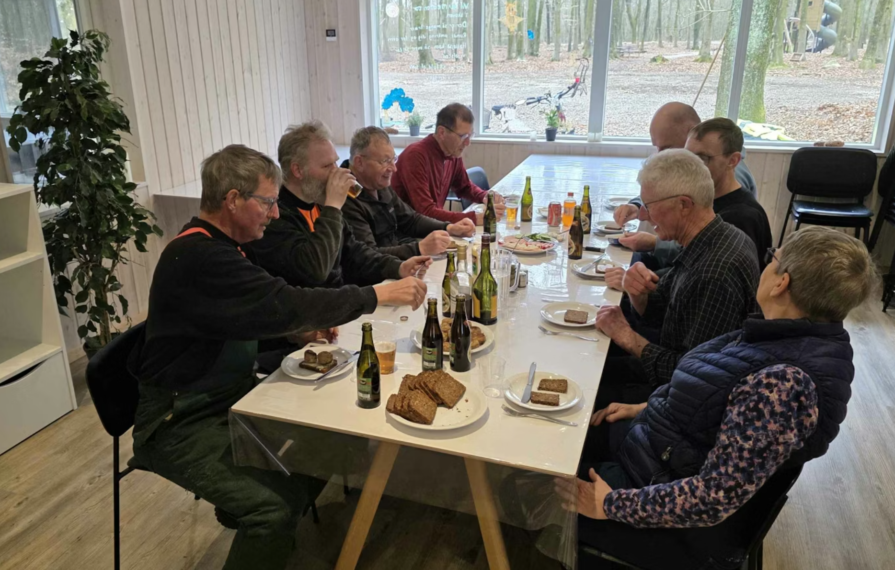

En forening
for byen, bygget
af byen.
Tistrup Erhvervs- og Borgerforening arbejder for Tistrup By og oplands interesser – gennem fællesskab, frivillighed og samarbejde.

Hvad vi er til for.
Vi formidler samarbejde mellem lokalområdets interessegrupper og arbejder for udvikling inden for erhverv, kultur, fritid, teknik, miljø og det sociale område.
Hvad vi laver.
Foreningen ejer og passer på store dele af det fælles Tistrup. Her er nogle af de ting, der fylder året rundt:
-
Tistrup Anlæg
Søen, plantagen, stierne, legepladserne og Læringshytten. Byens grønne hjerte, som vi vedligeholder året rundt.
-
By-skoven
Legeplads, shelter og stier. Vi passer bøgeskoven, fælder træer hvor nødvendigt, og planter nyt.
-
Stadionanlægget
15,72 ha på Agerkrog og Snorup, udlejet til Tistrup Boldklub, Tennisklub og Spejderne.
-
Arrangementer
Midsommerfest, Jul i Tistrup, valgaften, netværksmøder, Fredagsbobler.
-
Velkomstpakker
Vi byder nye borgere velkommen med en pakke og et besøg.
-
Repræsentation
Vi sidder med ved bordet i HHST-udviklingsråd, Hodde-Tistrup Udviklingsplan 2026–2030 og Varde Handelsråd.
Syv mennesker, valgt af byen.
Bestyrelsen består af 7 medlemmer valgt blandt medlemmerne. Den blev konstitueret efter generalforsamlingen 26. marts 2026.
Revisorer
Repræsentanter
Generalforsamling.
Ordinær generalforsamling afholdes hvert år i marts måned og indkaldes med mindst 14 dages varsel via Facebook, Tistrup Nyt og opslag i byen.
Dagsorden følger vedtægternes §4: valg af dirigent, formandens beretning, regnskab, indkomne forslag, valg af bestyrelse og suppleanter, valg af revisorer og eventuelt.
Alle medlemmer er velkomne – og der er kaffe efter mødet.